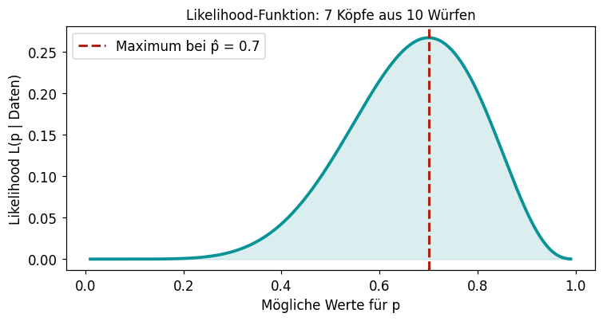

2.2 Schätzmethoden
Lernziele
Am Ende dieses Unterkapitels kannst du:
- das Prinzip der Momentenmethode erklären und auf einfache Verteilungen anwenden.
- das intuitive Prinzip der Maximum-Likelihood-Methode beschreiben.
- für Normal- und Bernoulli-Verteilung die Standardschätzer mit beiden Methoden herleiten.
Einführung
In Kapitel 2.1 haben wir den Begriff des Schätzers kennengelernt. Eine Frage bleibt aber offen: Woher wissen wir, welchen Schätzer wir nehmen sollen? Für jeden Parameter gibt es prinzipiell unendlich viele mögliche Schätzfunktionen – warum ist \bar{x} ein guter Schätzer für \mu, und nicht z.B. immer der erste Beobachtungswert x_1 allein?
Zwei systematische Methoden helfen dabei, sinnvolle Schätzer zu konstruieren:
- Momentenmethode – ersetze theoretische Momente durch Stichprobenmomente.
- Maximum-Likelihood-Methode – wähle den Parameter, der die beobachteten Daten am wahrscheinlichsten macht.
Die Momentenmethode
Grundidee
Für eine Wahrscheinlichkeitsverteilung gibt es theoretische Kenngrößen (Momente), die vom unbekannten Parameter abhängen:
- Das erste Moment ist der Erwartungswert \mu = E(X).
- Das zweite zentrale Moment ist die Varianz \sigma^2 = \text{Var}(X).
Die Idee der Momentenmethode: Ersetze das theoretische Moment durch das entsprechende Stichprobenmoment und löse nach dem Parameter auf.
Beispiel: Normalverteilung \mathcal{N}(\mu, \sigma^2)
Eine Normalverteilung hat zwei Parameter: \mu und \sigma^2.
Bekannte Formeln: E(X) = \mu \qquad \text{und} \qquad \text{Var}(X) = \sigma^2
Momentenmethode: Ersetze E(X) durch \bar{x} und \text{Var}(X) durch s^2: \hat{\mu} = \bar{x} \qquad \text{und} \qquad \hat{\sigma}^2 = s^2
Das Ergebnis ist genau das, was wir intuitiv schon getan haben: Mittelwert schätzt Mittelwert, Varianz schätzt Varianz.
Beispiel: Bernoulli-Verteilung \text{Ber}(p)
Ein Bernoulli-Experiment hat einen Parameter p (Erfolgswahrscheinlichkeit). Es gilt: E(X) = p
Momentenmethode: \hat{p} = \bar{x} – also die relative Häufigkeit der Erfolge. Auch das ist exakt das, was wir intuitiv tun würden.
Beispiel: Exponentialverteilung \text{Exp}(\lambda)
Die Exponentialverteilung wird oft für Wartezeiten verwendet. Es gilt: E(X) = \frac{1}{\lambda}
Momentenmethode: \bar{x} = \frac{1}{\hat{\lambda}}, also: \hat{\lambda} = \frac{1}{\bar{x}}
Rechenbeispiel: Pinguine auf Dream Island
Wie lange dauert es im Schnitt, bis ein Pinguin auf Dream Island taucht? Wir modellieren die Tauchintervalle (in Minuten) mit einer Exponentialverteilung. Aus einer Stichprobe von 50 Tauchen ergibt sich ein Mittelwert von \bar{x} = 4{,}2 Minuten.
Momentenschätzer: \hat{\lambda} = \frac{1}{\bar{x}} = \frac{1}{4{,}2} \approx 0{,}238 \text{ Tauchen pro Minute}
Die Maximum-Likelihood-Methode
Das Grundprinzip
Die Maximum-Likelihood-Methode (ML-Methode) stellt eine andere Frage:
Für welchen Parameterwert \theta sind die tatsächlich beobachteten Daten am plausibelsten – also mit der größten Wahrscheinlichkeit aufgetreten?
Das klingt vernünftig: Wir wählen den Parameterwert, für den unsere Daten am wenigsten überraschend sind.
Münzwurf: Intuition für ML
Angenommen, wir werfen eine Münze 10-mal und beobachten 7 Köpfe. Welche Kopf-Wahrscheinlichkeit p macht diese Beobachtung am plausibelsten?
Die Likelihood-Funktion zeigt, wie plausibel jeder Wert von p angesichts der Beobachtung ist. Das Maximum liegt bei \hat{p} = 7/10 = 0{,}7 – der ML-Schätzer ist die relative Häufigkeit.
Formale Idee
Sind x_1, \ldots, x_n unabhängige Beobachtungen, so ist die Likelihood-Funktion: L(\theta \mid x_1, \ldots, x_n) = \prod_{i=1}^n f_\theta(x_i) wobei f_\theta die Wahrscheinlichkeit (oder Dichte) eines einzelnen Werts unter Parameter \theta ist.
Der ML-Schätzer ist das \hat{\theta}, das L maximiert: \hat{\theta}_{\text{ML}} = \operatorname*{arg\,max}_\theta \; L(\theta \mid x_1, \ldots, x_n)
TippIn der Praxis: Log-Likelihood
Da Produkte numerisch schnell sehr klein werden, maximiert man in der Praxis stattdessen die Log-Likelihood \ell(\theta) = \ln L(\theta). Da der Logarithmus monoton ist, liegen das Maximum von L und \ell an derselben Stelle.
ML-Schätzer für die Normalverteilung
Für Daten aus einer \mathcal{N}(\mu, \sigma^2)-Verteilung lautet das Ergebnis der Maximierung (ohne Herleitung):
\hat{\mu}_{\text{ML}} = \bar{x} \qquad \text{und} \qquad \hat{\sigma}^2_{\text{ML}} = \frac{1}{n}\sum_{i=1}^n (x_i - \bar{x})^2
Achtung: Der ML-Schätzer für \sigma^2 verwendet 1/n, nicht 1/(n-1)! Das macht ihn leicht verzerrt (unterschätzt \sigma^2 systematisch). Mehr dazu in Kapitel 2.3.
Vergleich: Momentenmethode vs. Maximum-Likelihood
| Momentenmethode | Maximum-Likelihood | |
|---|---|---|
| Prinzip | Momente angleichen | Daten plausibelst machen |
| Einfachheit | Meist einfach zu rechnen | Manchmal aufwändiger |
| Ergebnis (Normal) | \hat{\mu} = \bar{x}, \hat{\sigma}^2 = s^2 | \hat{\mu} = \bar{x}, \hat{\sigma}^2 = \tilde{s}^2 (mit 1/n) |
| Ergebnis (Bernoulli) | \hat{p} = \bar{x} | \hat{p} = \bar{x} |
| Güte | Gut, manchmal nicht optimal | Asymptotisch optimal (für große n) |
Für die meisten Standardverteilungen liefern beide Methoden identische oder sehr ähnliche Schätzer.
Python: Parameterfit mit Maximum-Likelihood
In Python kann man für viele Verteilungen den ML-Schätzer direkt mit scipy.stats berechnen:
Wissensüberprüfung
---
primaryColor: '#0a9396'
shuffleQuestions: false
shuffleAnswers: true
---
### Welches Prinzip liegt der Momentenmethode zugrunde?
1. [x] Theoretische Momente der Verteilung werden durch Stichprobenmomente ersetzt.
> Richtig! Man ersetzt z.B. E(X) durch x̄ und Var(X) durch s².
1. [ ] Man wählt den Parameterwert, der die Daten am wahrscheinlichsten macht.
> Das ist das Prinzip der Maximum-Likelihood-Methode.
1. [ ] Man minimiert die Summe der quadratischen Abweichungen.
> Das ist die Methode der kleinsten Quadrate, die bei der Regression verwendet wird.
1. [ ] Man wählt den Parameter, der den Median der Stichprobe trifft.
### Die Momentenmethode ergibt für die Exponentialverteilung Exp(λ) den Schätzer:
1. [ ] $\hat{\lambda} = \bar{x}$
1. [x] $\hat{\lambda} = 1/\bar{x}$
> Richtig! Da E(X) = 1/λ, ergibt die Momentenmethode: x̄ = 1/λ̂, also λ̂ = 1/x̄.
1. [ ] $\hat{\lambda} = \bar{x}^2$
1. [ ] $\hat{\lambda} = s^2$
### Was wird bei der Maximum-Likelihood-Methode maximiert?
1. [ ] Die Stichprobenvarianz
1. [ ] Der Erwartungswert des Schätzers
1. [x] Die Wahrscheinlichkeit (Likelihood), mit der die beobachteten Daten unter einem gegebenen Parameter auftreten.
> Richtig! Man sucht den Parameterwert, für den die Beobachtung am plausibelsten ist.
1. [ ] Die Anzahl der Stichprobenwerte
### Bei einem Münzwurf-Experiment (10 Würfe, 7 Köpfe) liefert der ML-Schätzer für die Kopf-Wahrscheinlichkeit p:
1. [ ] p̂ = 0.5 (da eine faire Münze angenommen wird)
1. [x] p̂ = 0.7
> Richtig! Der ML-Schätzer ist die relative Häufigkeit: 7/10 = 0.7.
1. [ ] p̂ = 7 (die Anzahl der Köpfe)
1. [ ] p̂ = 0.3
### Momentenmethode und Maximum-Likelihood-Methode liefern für die Normalverteilung den Schätzer μ̂ = x̄. Wo unterscheiden sie sich?
1. [ ] Gar nicht, beide Methoden sind identisch.
1. [x] Beim Varianz-Schätzer: Momentenmethode liefert s² (mit n-1), ML-Methode liefert σ̂² (mit n).
> Richtig! Die ML-Methode liefert einen leicht verzerrten Varianz-Schätzer.
1. [ ] Beim Schätzer für μ: ML verwendet den Median, Momentenmethode den Mittelwert.
1. [ ] ML ist nur für diskrete Verteilungen geeignet.